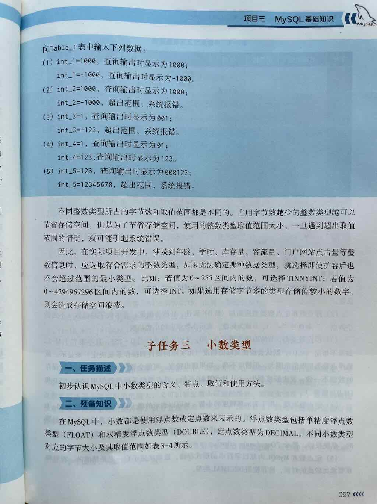
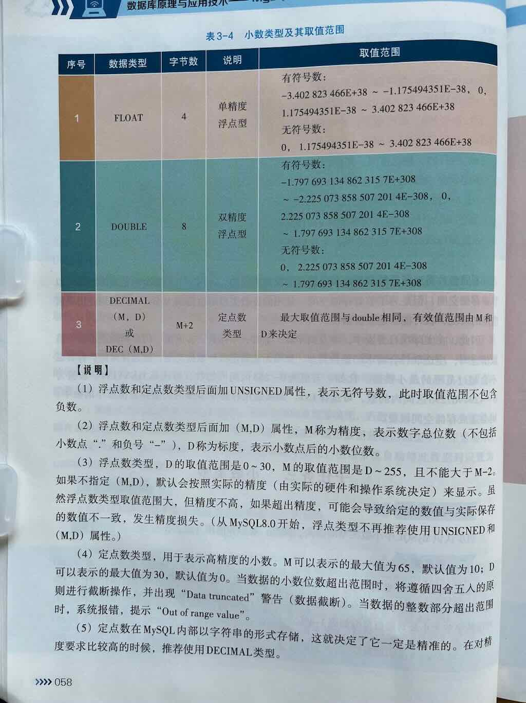
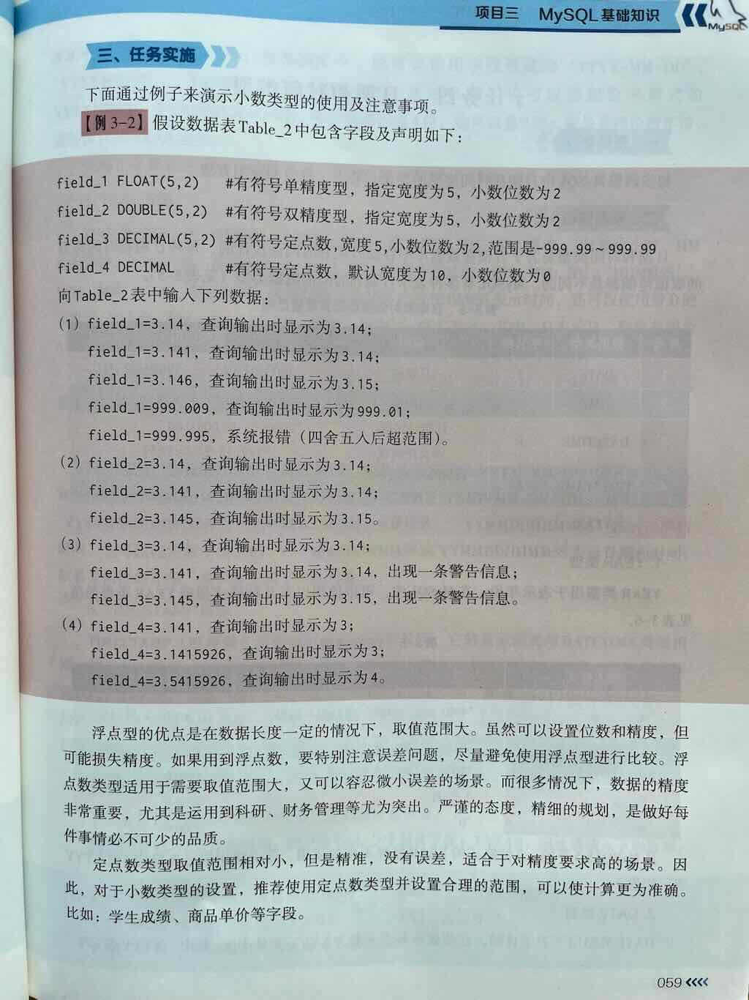

2 decimal
在 MySQL 中，小数类型（Decimal / Floating-Point Types） 是用于存储带有小数部分的数值（即非整数值）的数据类型。它们广泛应用于需要精确计算或高精度存储的场景，比如金额、价格、税率、科学数据、GPS 坐标等。
MySQL 提供了两种主要的小数类型类别：



一、MySQL小数类型总览
| 类型类别 | 数据类型 | 是否精确 | 说明 |
|---|---|---|---|
| 定点数（精确小数） | DECIMAL（或 NUMERIC） |
✅ 精确 | 适合存储需要精确计算的小数，如金额、税率，推荐在财务场景使用 |
| 浮点数（近似小数） | FLOAT |
❌ 近似 | 用于存储近似值的小数，节省空间但可能有精度损失，适合科学计算等 |
DOUBLE |
❌ 近似 | 比 FLOAT 精度更高但仍是近似值，存储范围更大 |
二、什么是 DECIMAL？
MySQL中的小数类型使用DECIMAL() 函数创建。Decimal在英语中的本意是“小数”。
DECIMAL（或它的同义词NUMERIC）是 MySQL 中的定点数类型- 用于存储精确的小数值，不会丢失精度
- 特别适合需要精确计算和存储的场景，如：
- 💰 货币金额（如订单金额、账户余额）
- 🧾 税率、单价、手续费
- 📊 任何不能容忍精度丢失的数值
用途
- DECIMAL()函数用于创建一个精确的小数类型。
- DECIMAL()适合存储精确数值，特别适合需要精确计算的场景，如财务数据、货币金额等。
特点：
- 存储的是字符串形式的小数，不是二进制近似值
- 精确存储，精确计算
- 占用空间相对较大，但精度有保障
基本语法
- M：表示总位数（1-65，不含小数点），总位数包含整数位数+小数位数。整数位数 = M - D
- D: 小数点后的位数(0-30)，且必须小于或等于M。
示例：创建表时定义DECIMAL列
CREATE TABLE products (
id INT PRIMARY KEY,
name VARCHAR(100),
price DECIMAL(10, 2), -- 共10位，小数点后2位
weight DECIMAL(8, 3) -- 共8位，小数点后3位
);
示例：插入DECIMAL值
浮点与定点数
| 类型 | 特点 | 精度问题 | 应用场景 |
|---|---|---|---|
FLOAT(M,D) |
单精度浮点，4字节 | 7位有效数字 | 科学测量数据 |
DOUBLE(M,D) |
双精度浮点，8字节 | 15位有效数字 | 高精度计算（非金融） |
DECIMAL(M,D) |
定点数，M总位数，D小数位 | 精确计算 | 金额、财务数据 |
底层原理：
FLOAT/DOUBLE使用二进制浮点数（IEEE 754标准），存在舍入误差DECIMAL以字符串形式存储，精确但计算代价更高
示例：
三、DECIMAL 的语法
参数说明：
| 参数 | 含义 | 范围 | 说明 |
|---|---|---|---|
| M (Precision) | 总位数（精度） | 1 ~ 65 | 表示该数字总共允许的 数字位数（包括整数部分 + 小数部分） |
| D (Scale) | 小数位数（标度） | 0 ~ M | 表示小数点后允许的 位数 |
🎯 M = 整数位数 + 小数位数，D = 小数位数
例如：
DECIMAL(5,2)表示总共最多 5 位数字，其中小数部分占 2 位 → 可存储如123.45（整数部分最多 3 位）
四、DECIMAL()示例
示例：存储金额
要求：精确到分，即小数点后2位
CREATE TABLE products (
id INT PRIMARY KEY,
name VARCHAR(100),
price DECIMAL(10, 2) -- 总共最多10位数字，其中小数点后2位，如 99999999.99
);
- 可存储：
12345.67、0.99、10000000.00 - 不可存储：
123456789.12（超过10位），123.456（小数点超过2位）
示例：存储税率
要求：精确到小数点后4位
CREATE TABLE taxes (
id INT PRIMARY KEY,
name VARCHAR(50),
rate DECIMAL(5, 4) -- 如 0.1234 表示 12.34%
);
五、DECIMAL 的存储与计算优势
- 精确存储：不像浮点数那样存在二进制近似问题
- 精确计算：加减乘除运算不会产生精度误差，适合财务系统
- 推荐使用场景：
- 所有跟钱相关的字段（如价格、账户余额、订单金额）
- 需要高精度计算的场景
六、什么是 FLOAT 和 DOUBLE
FLOAT和DOUBLE是 MySQL 中的浮点数类型，用于存储近似的小数值- 它们基于 IEEE 754 浮点数标准，在计算机中以二进制形式近似存储
- 适合科学计算、统计、工程等领域，但在需要精确计算的场景（如金钱）中不推荐使用
七、FLOAT 和 DOUBLE区别
| 类型 | 字节数 | 有效数字（精度） | 范围 | 是否精确 | 推荐用途 |
|---|---|---|---|---|---|
| FLOAT | 4 字节 | 约 7 位有效数字 | 较小 | ❌ 近似值 | 科学计算、非金融小数 |
| DOUBLE | 8 字节 | 约 15-16 位有效数字 | 更大 | ❌ 近似值 | 高精度科学计算，但仍不推荐用于金额 |
| 特性 | DECIMAL (定点数) | FLOAT / DOUBLE (浮点数) |
|---|---|---|
| 是否精确 | ✅ 精确 | ❌ 近似（可能有精度损失） |
| 存储方式 | 字符串形式存储小数 | 二进制近似存储 |
| 推荐用途 | 金额、价格、税率、精确计算 | 科学计算、统计、工程测量 |
| 空间占用 | 较大（取决于 M/D） | FLOAT: 4字节，DOUBLE: 8字节 |
能否存储 0.1 + 0.2 = 0.3 |
✅ 可以精确存储和计算 | ❌ 可能得到类似 0.30000000000000004 |
| 语法 | DECIMAL(M, D) 或 NUMERIC(M, D) |
FLOAT 或 DOUBLE |
八、FLOAT 和 DOUBLE 的语法
- M：表示总位数（1-65，不含小数点），总位数包含整数位数+小数位数。整数位数 = M - D - D: 小数点后的位数(0-30)，且必须小于或等于M。⚠️ 注意：虽然可以指定
(M,D)，但 FLOAT 和 DOUBLE 仍然是近似存储，不会像 DECIMAL 那样严格限制精度，所以 M/D 往往只是提示作用，实际精度由类型本身决定
九、常见的用法（不指定精度）：
示例: 存储科学测量值（允许小误差）
CREATE TABLE sensor_data (
id INT PRIMARY KEY,
temperature FLOAT, -- 摄氏温度，允许微小误差
humidity DOUBLE -- 湿度，双精度
);
示例:存储统计值（非财务）
十、FLOAT/DOUBLE 的局限
| 特点 | 说明 |
|---|---|
| ✅ 节省存储空间 | FLOAT 占 4 字节，DOUBLE 占 8 字节 |
| ✅ 范围大 | DOUBLE 比 FLOAT 能表示更大或更小的数值 |
| ❌ 精度不精确 | 存储时是二进制近似值，可能导致小数点后几位不准确 |
| ❌ 不适合金额计算 | 例如 0.1 + 0.2 可能不等于 0.3（存在精度误差） |
⚠️ 重要提示：永远不要用 FLOAT 或 DOUBLE 存储金额等需要精确计算的数值！
十一、使用场景
推荐使用 DECIMAL 的场景
- 💰 金额、价格、账户余额、订单总额
- 🧾 税率、手续费、折扣率
- 📋 任何需要精确到分、不允许误差的场景
示例：
避免使用FLOAT/DOUBLE的场景
- 任何需要精确小数计算的场景，特别是涉及财务、货币
- 当你需要确保
0.1 + 0.2 = 0.3时（FLOAT/DUBLE 可能不成立）
如果你不确定用哪种类型
| 数据性质 | 推荐类型 |
|---|---|
| 是金额、价格、税率等需要精确计算的值 | DECIMAL(M, D) |
| 是科学数值、统计值、测量值，允许微小误差 | FLOAT 或 DOUBLE |
| 想节省空间且对精度要求不高 | FLOAT |
| 需要更高精度但不涉及金钱 | DOUBLE |
十二、总结
| 类型 | 是否精确 | 推荐用途 | 关键字 |
|---|---|---|---|
| DECIMAL / NUMERIC | ✅ 精确 | 金额、价格、税率、精确计算 | DECIMAL(M, D) |
| FLOAT | ❌ 近似 | 科学计算、统计值 | FLOAT |
| DOUBLE | ❌ 近似 | 高精度科学计算、大数据范围 | DOUBLE |
总结一句话：
在 MySQL 中，存储需要精确小数（如金额）时，一定要使用
DECIMAL(M, D)；而在科学计算等可接受误差的场景下，可以使用FLOAT或DOUBLE。